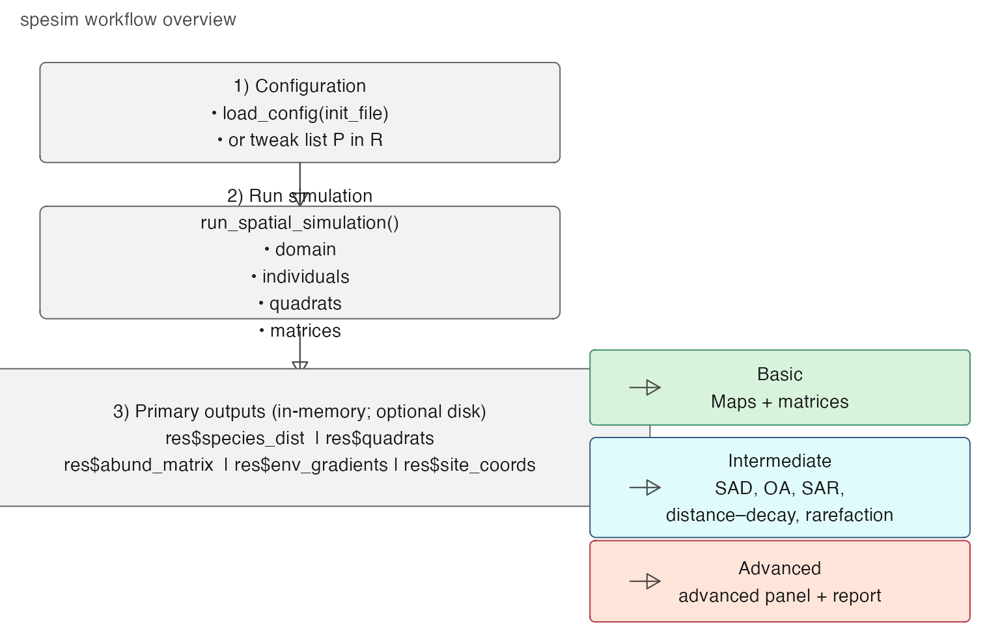
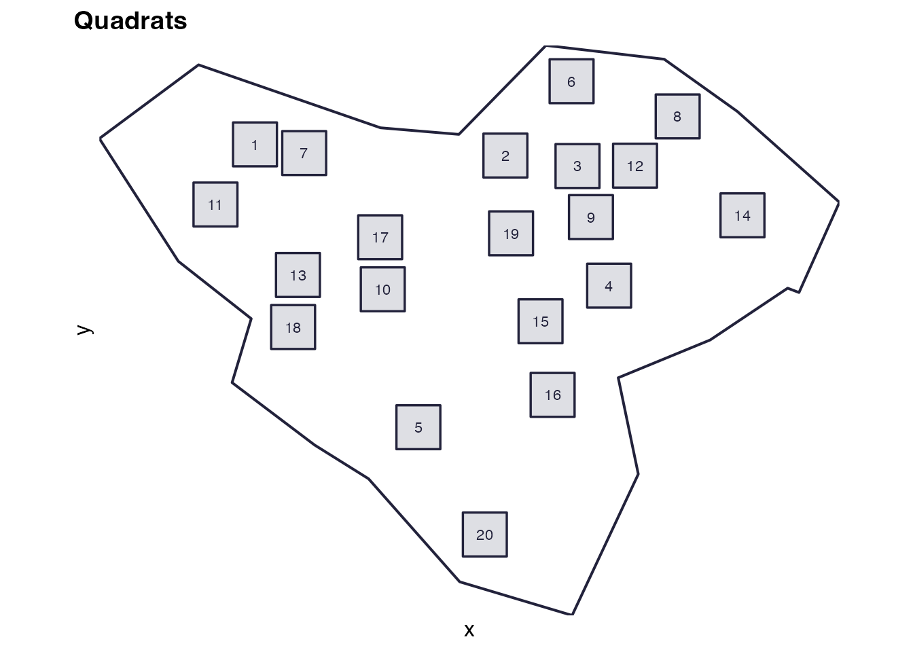
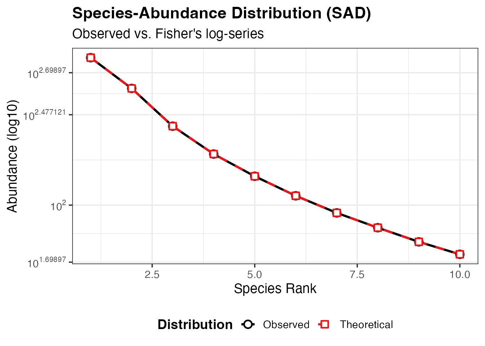

spesim workflow: basic → intermediate → advanced
Source:vignettes/spesim-workflow.Rmd
spesim-workflow.RmdThis vignette gives a structured overview of what spesim can do, arranged as a progression from basic (fast, minimal outputs) through intermediate (common teaching / exploration workflows) to advanced (full reporting and diagnostic panels).
It is meant as a map of the package: which functions are involved, what inputs and outputs to expect, and which “knobs” to turn at each stage.
Big picture workflow (flow diagram)
This diagram shows the main pipeline in a compact, teachable form.
# A dependency-free flow diagram (uses base R's grid package)
library(grid)
grid.newpage()
box <- function(x, y, w, h, label, gp = gpar(fill = "grey95", col = "grey40", lwd = 1)) {
grid.roundrect(x, y, width = w, height = h, r = unit(0.06, "snpc"), gp = gp)
grid.text(label, x, y, gp = gpar(col = "grey10", cex = 0.9))
}
arrow_down <- function(x, y0, y1) {
grid.lines(x = unit(c(x, x), "npc"), y = unit(c(y0, y1), "npc"),
gp = gpar(col = "grey30", lwd = 1.2),
arrow = arrow(type = "closed", length = unit(0.12, "in")))
}
arrow_right <- function(x0, x1, y) {
grid.lines(x = unit(c(x0, x1), "npc"), y = unit(c(y, y), "npc"),
gp = gpar(col = "grey30", lwd = 1.1),
arrow = arrow(type = "closed", length = unit(0.12, "in")))
}
# Main spine
box(0.30, 0.82, 0.52, 0.16,
"1) Configuration\n• load_config(init_file)\n• or tweak list P in R")
arrow_down(0.30, 0.74, 0.67)
box(0.30, 0.58, 0.52, 0.18,
"2) Run simulation\nrun_spatial_simulation()\n• domain\n• individuals\n• quadrats\n• matrices")
arrow_down(0.30, 0.47, 0.40)
box(0.30, 0.30, 0.70, 0.22,
"3) Primary outputs (in-memory; optional disk)\nres$species_dist | res$quadrats\nres$abund_matrix | res$env_gradients | res$site_coords")
# Analysis branches
box(0.78, 0.38, 0.38, 0.12, "Basic\nMaps + matrices", gp = gpar(fill = "#d8f3dc", col = "#40916c"))
box(0.78, 0.22, 0.38, 0.16, "Intermediate\nSAD, OA, SAR,\ndistance–decay, rarefaction",
gp = gpar(fill = "#e0fbfc", col = "#3d5a80"))
box(0.78, 0.07, 0.38, 0.13, "Advanced\nadvanced panel + report",
gp = gpar(fill = "#ffe5d9", col = "#b23a48"))
arrow_right(0.63, 0.66, 0.38)
arrow_right(0.63, 0.66, 0.22)
arrow_right(0.63, 0.66, 0.07)
# Minor caption
grid.text("spesim workflow overview", x = unit(0.02, "npc"), y = unit(0.98, "npc"),
just = c("left", "top"), gp = gpar(cex = 0.9, col = "grey30"))
Three levels of use
Level 1 — Basic (fast, minimal, robust)
Goal: run a small simulation quickly and get the essential objects back for plotting and teaching.
What you typically do
library(spesim)
#> spesim loaded - try run_spatial_simulation() to generate a simulation.
# Start from a known-working example init file
init <- system.file("examples/spesim_init_basic.txt", package = "spesim")
P <- load_config(init)
#> ========== INITIALISING SPATIAL SAMPLING SIMULATION ==========
# Keep it fast (in-memory only)
P$ADVANCED_ANALYSIS <- FALSE
res <- run_spatial_simulation(P = P, write_outputs = FALSE)
#> Note: no non-1 interactions for species: A, B, C, D, E, F, G, H, I, J.
#> ---- Interactions Summary ----
#> Species: 10 (A..J)
#> Radius : 0
#> Non-1 entries: 0 (0.0% of 100)
#>
#> Matrix ('.' = 1):
#> A B C D E F G H I J
#> A . . . . . . . . . .
#> B . . . . . . . . . .
#> C . . . . . . . . . .
#> D . . . . . . . . . .
#> E . . . . . . . . . .
#> F . . . . . . . . . .
#> G . . . . . . . . . .
#> H . . . . . . . . . .
#> I . . . . . . . . . .
#> J . . . . . . . . . .
#> ------------------------------
#> ========== INITIALISING SPATIAL SAMPLING SIMULATION ==========
#> ========== SIMULATION PARAMETERS ==========
#> list(SEED = 77L, OUTPUT_PREFIX = "out/run_basic", N_INDIVIDUALS = 2000L,
#> N_SPECIES = 10L, DOMINANT_FRACTION = 0.3, FISHER_ALPHA = 4.2,
#> FISHER_X = 0.95, GRADIENT_SPECIES = c("A", "B", "C", "D"),
#> GRADIENT_ASSIGNMENTS = c("temperature", "temperature", "elevation",
#> "rainfall"), GRADIENT_OPTIMA = 0.5, GRADIENT_TOLERANCE = 0.12,
#> SAMPLING_RESOLUTION = 50L, ENVIRONMENTAL_NOISE = 0.05, MAX_CLUSTERS_DOMINANT = 5,
#> CLUSTER_SPREAD_DOMINANT = 3, INTERACTION_RADIUS = 0, INTERACTION_MATRIX = structure(c(1,
#> 1, 1, 1, 1, 1, 1, 1, 1, 1, 1, 1, 1, 1, 1, 1, 1, 1, 1, 1,
#> 1, 1, 1, 1, 1, 1, 1, 1, 1, 1, 1, 1, 1, 1, 1, 1, 1, 1, 1,
#> 1, 1, 1, 1, 1, 1, 1, 1, 1, 1, 1, 1, 1, 1, 1, 1, 1, 1, 1,
#> 1, 1, 1, 1, 1, 1, 1, 1, 1, 1, 1, 1, 1, 1, 1, 1, 1, 1, 1,
#> 1, 1, 1, 1, 1, 1, 1, 1, 1, 1, 1, 1, 1, 1, 1, 1, 1, 1, 1,
#> 1, 1, 1, 1), dim = c(10L, 10L), dimnames = list(c("A", "B",
#> "C", "D", "E", "F", "G", "H", "I", "J"), c("A", "B", "C",
#> "D", "E", "F", "G", "H", "I", "J"))), INTERACTIONS_FILE = NULL,
#> INTERACTIONS_EDGELIST = NULL, SAMPLING_SCHEME = "random",
#> N_QUADRATS = 20L, QUADRAT_SIZE_OPTION = "medium", N_TRANSECTS = 1,
#> N_QUADRATS_PER_TRANSECT = 8, TRANSECT_ANGLE = 90, VORONOI_SEED_FACTOR = 10,
#> POINT_SIZE = 0.2, POINT_ALPHA = 1, QUADRAT_ALPHA = 0.05,
#> BACKGROUND_COLOUR = "white", FOREGROUND_COLOUR = "#22223b",
#> QUADRAT_COLOUR = "black", ADVANCED_ANALYSIS = FALSE, SPATIAL_PROCESS_A = "poisson",
#> A_PARENT_INTENSITY = NA_real_, A_MEAN_OFFSPRING = 10, A_CLUSTER_SCALE = 1,
#> SPATIAL_PROCESS_OTHERS = "poisson", OTHERS_BETA = NA_real_,
#> OTHERS_GAMMA = NA_real_, OTHERS_R = 1, OTHERS_S = 2, GRADIENT = structure(list(
#> species = c("A", "B", "C", "D"), gradient = c("temperature",
#> "temperature", "elevation", "rainfall"), optimum = c(0.5,
#> 0.5, 0.5, 0.5), tol = c(0.12, 0.12, 0.12, 0.12)), class = c("tbl_df",
#> "tbl", "data.frame"), row.names = c(NA, -4L)))
#>
#> ========== RUNNING SIMULATION ==========
#> Warning: attribute variables are assumed to be spatially constant throughout
#> all geometries
names(res)
#> [1] "P" "domain" "species_dist" "quadrats"
#> [5] "env_gradients" "abund_matrix" "site_coords"Useful objects at this level
-
res$domain— sampling domain polygon -
res$species_dist— individuals as sf POINTS with aspeciescolumn -
res$quadrats— quadrat polygons withquadrat_id -
res$abund_matrix— site × species abundance table
Basic visualisations
# Domain + quadrats
plot_quadrats(res$domain, res$quadrats, title = "Quadrats")
Level 2 — Intermediate (typical analyses + teaching plots)
Goal: use the returned objects to compute common community-ecology summaries.
These are the same components that appear in the “advanced panel”, but here you can compute/plot them separately or integrate them into lessons.
Typical intermediate steps:
-
Rank–abundance (SAD):
calculate_rank_abundance(res$species_dist, res$P)plot_rank_abundance(...)
-
Occupancy–abundance:
calculate_occupancy_abundance(res$abund_matrix)plot_occupancy_abundance(...)
-
Species–area curve (SAR):
calculate_species_area(res$abund_matrix)plot_species_area(...)
-
Distance–decay:
calculate_distance_decay(res$abund_matrix, res$site_coords)plot_distance_decay(...)
-
Rarefaction:
calculate_rarefaction(res$abund_matrix)plot_rarefaction(...)
Example (one intermediate product):
ra <- calculate_rank_abundance(res$species_dist, res$P)
plot_rank_abundance(ra)
Level 3 — Advanced (full diagnostics + report)
Goal: generate a compact multi-plot diagnostic panel and a human-readable report.
There are two ways to do this:
- In-memory (useful for notebooks and teaching):
panel <- generate_advanced_panel(res)
print(panel)
cat(generate_full_report(res))- Write to disk (useful for “run it and inspect outputs” workflows):
# This will write timestamped outputs under out/demo_YYYYMMDD... etc.
res2 <- run_spatial_simulation(P = P, write_outputs = TRUE, output_prefix = "out/demo")Capability map (what features live where?)
Configuration capabilities
- “Init file” workflow:
load_config("path/to/init.txt") - In-memory workflow:
P <- load_config(example); P$N_SPECIES <- 10; ...
Key configuration families:
-
Community size + SAD:
N_SPECIES,N_INDIVIDUALS,DOMINANT_FRACTION,FISHER_ALPHA,FISHER_X -
Environmental filtering:
GRADIENT_*plusSAMPLING_RESOLUTION,ENVIRONMENTAL_NOISE -
Point processes:
SPATIAL_PROCESS_A,SPATIAL_PROCESS_OTHERSand their parameters -
Interactions:
INTERACTION_RADIUS,INTERACTIONS_EDGELISTorINTERACTIONS_FILE -
Sampling design:
SAMPLING_SCHEMEand scheme-specific parameters
Sampling design capabilities (quadrats)
- random:
place_quadrats() - tiled:
place_quadrats_tiled() - systematic:
place_quadrats_systematic() - transect:
place_quadrats_transect() - Voronoi-based:
place_quadrats_voronoi(show_voronoi=TRUE)for teaching/visualisation
See the dedicated vignette: “Quadrat placement schemes in spesim”.
A practical “ladder” you can teach from
A suggested progression for a lab/class:
-
Basic run (small, fast) → inspect
res$species_dist,res$quadrats,res$abund_matrix. - Turn on gradients → show how optima/tolerance shapes spatial pattern.
- Compare sampling schemes → show how design changes the observed matrix.
- Turn on interactions → show how neighbourhood effects alter co-occurrence.
- Run the advanced panel → interpret each diagnostic.
- Read the full report → emphasise reproducibility and “what happened?” narratives.
Reproducibility notes
-
load_config()sets a seed (from the init file) for reproducibility. - Some intermediate analyses (e.g., SAR permutations) use randomness
internally; set
set.seed(...)before calling if you want exact repeatability.